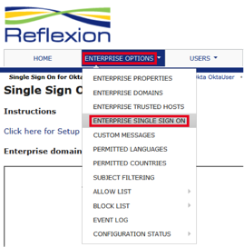
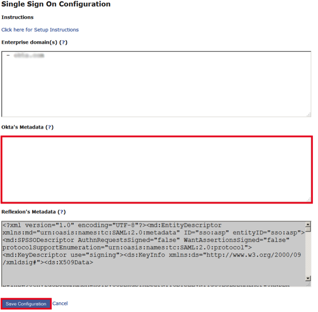

How to Configure SAML 2.0 for Reflexion
This setup might fail without parameter values that are customized for your organization. Please use the Okta Administrator Dashboard to add an application and view the values that are specific for your organization.
- Log into Reflexion Total Control as an Enterprise Administrator.
- Navigate to Enterprise Options > Enterprise Single Sign On.

- Copy and paste the following IDP Metadata into the Okta's Metadata field (see screen shot at end of step for reference):

- Select Save Configuration.
- Done!
Notes:
SP-initiated flows are supported.
IDP-initiated flows and Just In Time (JIT) Provisioning are not supported.
For SP-initiated flows, go to the https://asp.reflexion.net/emp/sso?domain=<YOUR_DOMAIN> page, where <YOUR_DOMAIN> is your Reflexion subdomain.